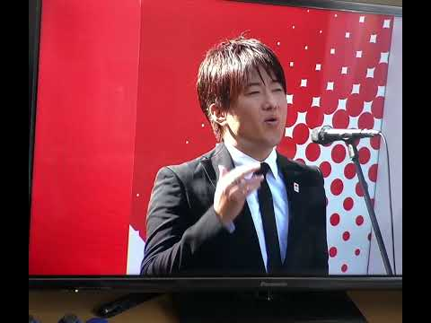

| 確認項目 | 結果 |
|---|---|
| 出典の関所（新しい未出典） | new=0 |
| 取り違えの関所 | blocked 0 |
| 翻訳の関所（parity/kana） | PASS |
| main合流 | a15577554（棚の一言追補を含む） |
| Lovable公開 | 反映されていません。本番は便10の build 6158062b のまま（2026-10-19 05:37 再実測）。Lovableの鍵（OAuth同意）が10-14から死んでいて押す係（kohyou_osu）が HTTP 401 で押せません。工場全体の公開が止まっている根本原因で、便7〜13が同じ状態。鍵が戻ると押す係が自動で押します（打開関所1464 PASS済み） |
| 本番の実測（コブクロのページに新しい動画ID Xe1xNJFUYxs／Queenに「午後6時41分」／Technotronicに「レジャーヌ」） | いずれも 0件（2026-10-19 05:37）。main側（a15577554）には全部入っています |